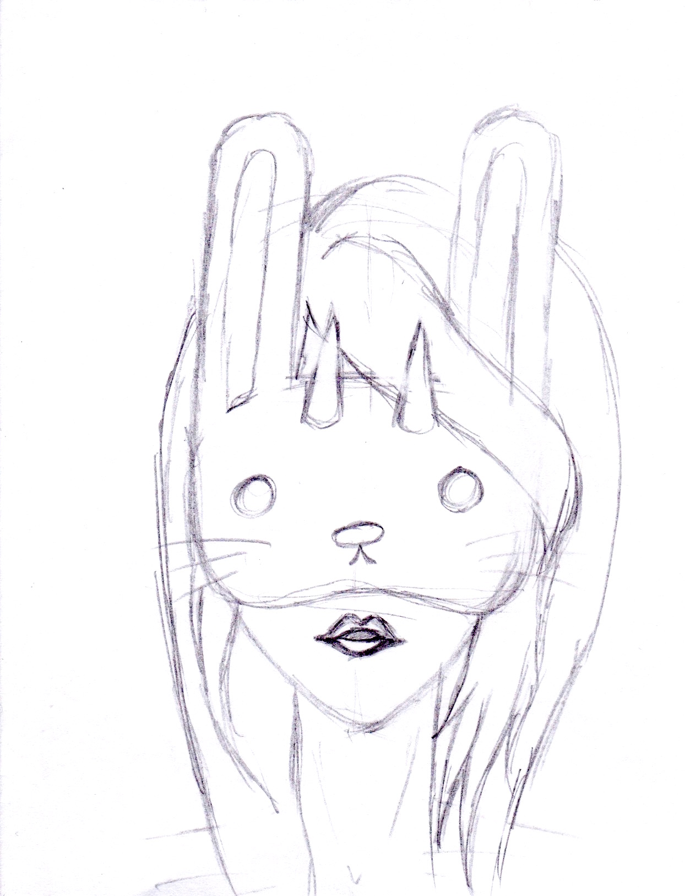
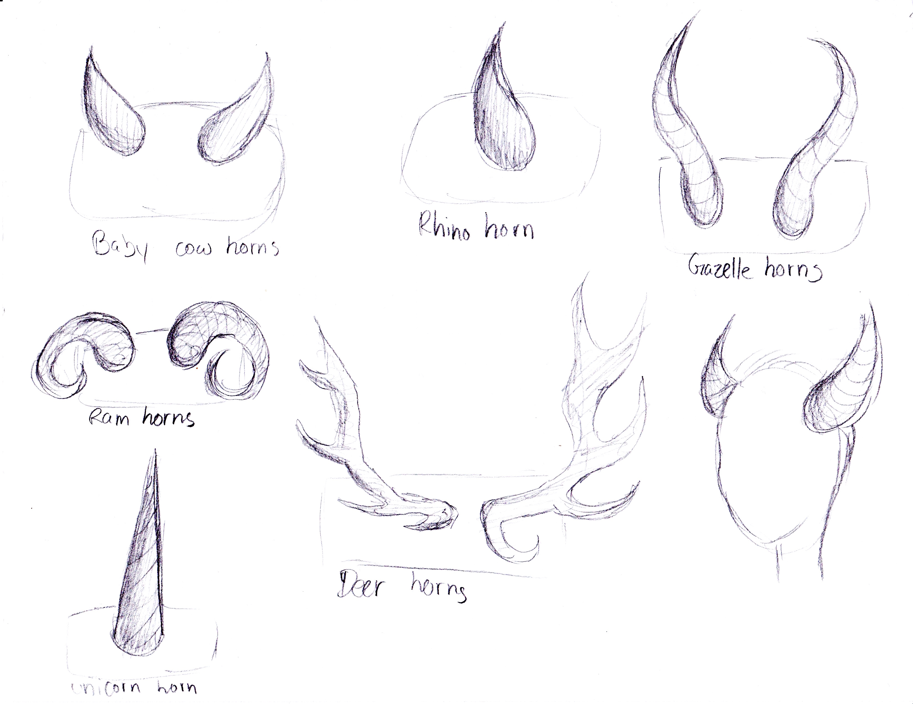

Masked Portraits
My Process:
I started off my process with two concept exploration boards, one to explore Yuta Onoda’s illustrations and one to explore possible ways to use a mask.
With the Yuta Onoda’s exploration board, I was able to observe his illustrations. His work is often very detailed and has a lot of shading which gives his illustrations depth.
My mask exploration board gave me ideas of possible ways I could incorporate a mask in the portraits. While making this board, I learned that masks often gives a sense of mystery and I wanted to create something using that idea.

After creating the exploration boards, I started to brainstorm and sketch out possible portraiture ideas. I originally planned to draw inspiration from ordinary masks or signs to cover the face. After drawing many sketches, I started getting interested in animal mask; however, I felt that normal animal masks were not interesting enough, so I wanted to add something to the portraits. During this time, I was very interested in animal horns and antlers, so I thought that the idea of traditionally viewed as prey with added horns would be interesting. I also created several different mouth forms and shapes to see what would be interesting, however, I ended up removing the mouth and making the mask bigger, allowing for more details.
 To make my portraits more believable, I did some studies of animal horns to see what kind of shapes there are and the texture of different horns. Afterwards, I created several sketches of possible animal and horns combinations.
After figuring out possible combinations, I created larger sketches of the masks I wanted to create. I was set on the bunny and panda masks, but was unsure of what mask to illustrate for my third portrait. I asked my classmates and the feedback they gave me, were that the cat and owl ones were very interesting. With this feedback, I created larger sketches of both to see which one fit with my other two and decided that the owl mask was the most interesting.
One of the biggest challenges I faced for this project was trying to create a sense of three dimension in my illustrations, similar to Yuta Onoda’s, in Adobe Illustrator; we were only allowed to create our portraits in Illustrator, with no other programs to help. To create a sense of 3D, I created a gradient effect with shapes of different tones. By the time I was done with a portrait, there were hundreds of shapes and vector points in my portrait.
Final Portraits
I wanted my portraits to be able to be strong by itself and put together. I positioned the figure differently in each portrait, to make it more interesting for the viewers, when they are set together; but the portraits are positioned so they can still stand alone. I also felt that the background makes it interesting and adds to the sense mystery.